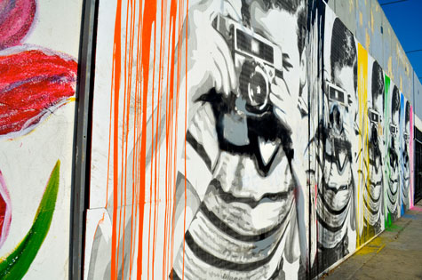
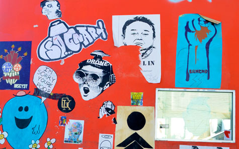

Street Art in Los Angeles
|  | |
|  |
Street art is art, specifically visual art, developed in public spaces that is, "in the streets" — though the term usually refers to unsanctioned art, as opposed to government sponsored initiatives. The term can include traditional graffiti artwork, sculpture, stencil graffiti, sticker art, wheatpasting and street poster art, video projection, art intervention, guerrilla art, and street interventions. Typically, the term street art or the more specific post-graffiti is used to distinguish contemporary public-space artwork from territorial graffiti, vandalism, and corporate art.
Artists have challenged art by situating it in non-art contexts. ‘Street’ artists do not aspire to change the definition of an artwork, but rather to question the existing environment with its own language. They attempt to have their work communicate with everyday people about socially relevant themes in ways that are informed by esthetic values without being imprisoned by them.